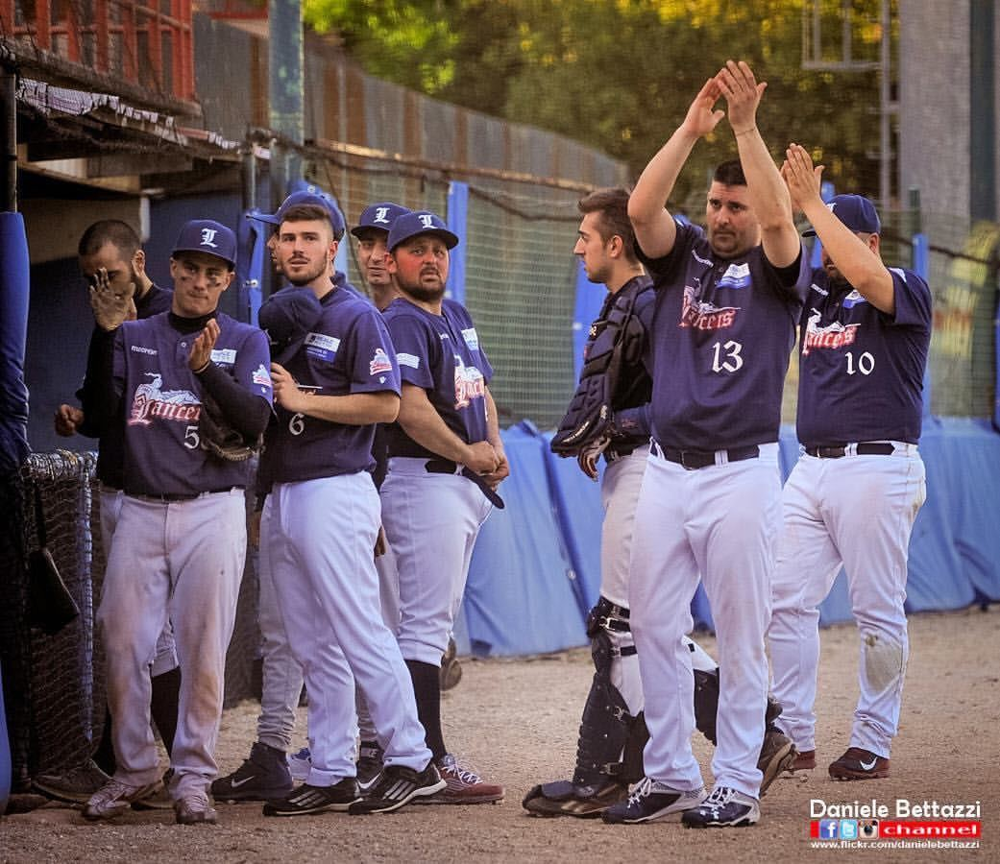

L’atteso debutto dei Lancers al campionato di Serie B termina con una doppia sconfitta a favore della Fiorentina, risultato forse di facile pronostico per gli addetti ai lavori che danno come favorita del girone la squadra gigliata grazie ad un mercato invernale molto intenso (tanti i nomi importanti giunti nel capoluogo toscano).
Molti si aspettavano, o speravano, una vera e propria disfatta del roster lastrigiano che però ha giocato un buon baseball affrontando l’esordio senza troppi timori, gara 1 infatti vede i Lancers segnare al primo attacco grazie al triplo di Ramirez spinto a casa base dal single hit di Albano.
La squadra di Duimovich risponde subito pareggiando nella parte bassa della stessa ripresa.
I partenti sono Salciccia, per la squadra di casa, e Ciappi per gli ospiti, ottima la prova del pitcher bianco/blu che tiene a bada le mazze avversarie fino alla quinta ripresa quando, grazie ad alcune battute valide, riescono a portare in vantaggio la squadra di Firenze.
Finisce 6 a 1 per la Fiorentina, partita combattuta per tutte e nove le riprese, giocata bene in difesa e sul monte di lancio, Vannuzzi rileva Ciappi per gli ultimi due inning con grande esperienza, per la squadra di Lastra a Signa manca ancora qualcosa in fase offensiva. SCORE GARA 1
Formazione partente Gara 1: Ciappi P; Becattini C; Diaz 1B; Ramirez 2B; Parrini 3B, Degl’Innocenti SS; Nerbini LF; Geri CF; Baratella RF.
Risultato forse troppo severo invece per gara 2, 11-1 per manifesta superiorità all’ottavo inning ancora a favore della Fiorentina.
Il partente designato dallo staff tecnico è Simone Baratella che nonostante un primo inning in salita, due punti subiti con tre valide, riesce a trovare la calma e la concentrazione per arginare il lineup di casa.
Almeno fino alla quarta ripresa, complici un paio di errori difensivi, arrivano altri 4 punti da parte della Fiorentina; Baratella chiude comunque l’inning e lascia il monte di lancio a Vannini.
Il lineup dei Lancers soffre i lanci di Sinforici che nelle cinque riprese giocate subisce soltanto due valide ed un punto; Vannini fa buona guardia per tre riprese ma si arrende all’inning numero 8, quattro battute valide e una base su ball sanciscono la vittoria dei fiorentini. SCORE GARA 2
Formazione partente Gara 2: Baratella P; Degl’Innocenti C; Diaz 1B; Ramirez 2B; Albano 3B, Parrini SS; Glielmi LF; Geri CF; Murphy RF.
Il prossimo appuntamento dei Lancers di Lastra a Signa è previsto per domenica 24 Aprile sul campo casalingo di Porto di Mezzo contro il Nettuno Elite, al momento a quota 2 vittorie e 2 sconfitte.
Forza Lancers!!!